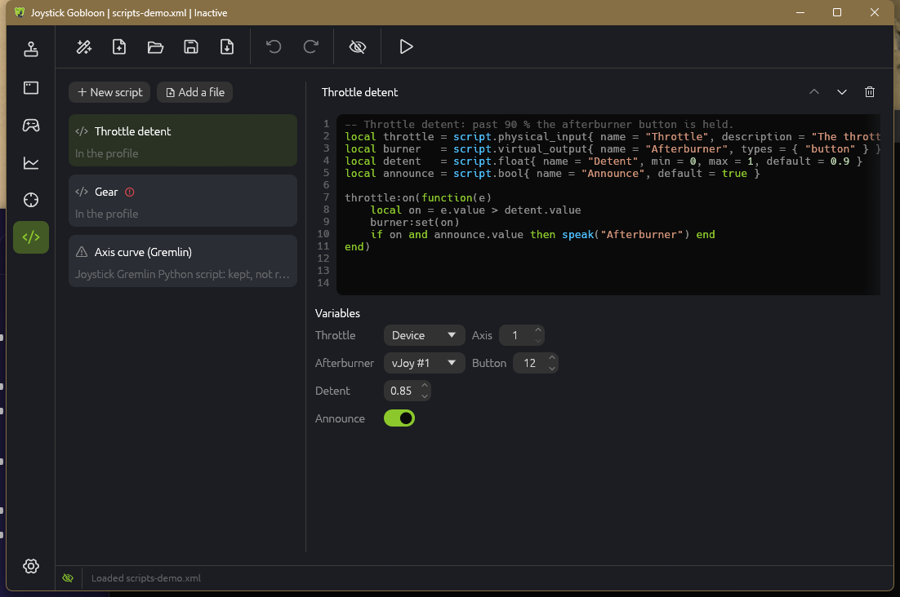

When actions are not enough, a script does the rest: shape an axis, hold a button past a detent, keep a trim value, answer with speech. Scripts react to your inputs next to the profile's actions, like Joystick Gremlin's user scripts, in Lua, the language many flight sim tools already use.
The idea
How it works
A script is a small Lua program kept in the profile or in a .lua file next to it. It does three things:
Declares variables: the stick axis it reads, the virtual output it writes, a number, a mode, a key. You pick their values on the Scripts page, so one script works with any stick and can be added twice with different settings.
Listens to inputs: a function runs on every change of an input, in a mode or in all of them. It runs before the input's own actions.
Acts: moves virtual stick and gamepad axes, presses buttons and keys, switches modes, speaks, or runs an action you named on another input.

Safe to share
Scripts run in a sandbox (Luau, the Lua made for scripts from other people): they cannot read or write files, start programs or reach the network. A function that runs longer than 5 ms is stopped, so a mistake cannot freeze your inputs, and a script that keeps failing is switched off. A script someone shares with you can only do what the page lists below.
Scripts from Joystick Gremlin
A Joystick Gremlin profile with Python user scripts imports with them: they stay in the profile, with the values of their variables, and are listed as not run. The idea is the same in Lua, so a Python script usually becomes a Lua script of about the same length: variables with the same names, a function per input.
Setting it up
1. Add a script
Open the Scripts page in the left rail. New script adds one kept in the profile, starting from a small example: edit it right there, with colors for Lua and line numbers. Add a file takes a .lua file instead: open it in your own editor with the pencil button. A file next to the profile is found by its name, so the two can move together; while the profile runs, saving the file reloads it.
2. Fill in the variables
Below the code, every variable the script declares gets a field: a stick and its axis, button or hat; a virtual stick and its output; a number with its limits; a switch, a text, a choice, a mode or a key. Hover a name to read its description. Needs a value marks a variable the script cannot do without.
3. Run it
Activate the profile. A mistake in the code shows on the Scripts page with its line, marked red in the editor and in the list, and the rest of the profile runs without the script. An error while the profile runs opens a message once; the log file JoystickGobloon.log in the data folder keeps every one, and what log() writes when Settings › General › Log level is Important or All.
Reference
Variables
Declare variables at the top of the script. Each takes a table with name (shown on the page), and optionally description, default and optional = false for one the script needs. .value holds what you picked.
script.bool{}, script.int{ min, max }, script.float{ min, max }, script.string{}
script.selection{ options = { "a", "b" } }: .value is the chosen option
script.mode{}: a mode of the profile
script.key{}: a keyboard key
script.physical_input{ types = { "axis", "button", "hat" } }: an input of a stick; .device, .type and .id name it
script.virtual_output{ types = { ... } }: an axis, button or hat of a virtual stick
script.logical_input{ types = { ... } }: an input of the logical device
Handlers and events
input:on(mode, function(e) ... end) runs the function on every change of a physical input, key or logical input. mode is a mode variable, a mode's name, or left out for every mode; a handler also runs in the modes that inherit from its mode. The event tells what happened:
e.value: an axis from -1 to 1, a button true or false, a hat's direction
e.pressed: buttons and keys
e.direction: hats, in degrees clockwise from up (0, 45 ... 315), nil when centered
script.every(0.1, function() ... end) runs a function every 0.1 s (at least every 0.01 s) while the profile runs. script.on_input(device, "button", 3, mode, fn) listens to an input named by its device GUID.
Outputs
output:set(x) on a virtual output variable: an axis -1..1, a button true/false, a hat in degrees or nil
vjoy.axis(stick, axis, value), vjoy.button(stick, button, pressed), vjoy.hat(stick, hat, degrees)
run_action("Lights"): runs the action with that name in its card title, like a short press of its input; false when there is none
log(...) (and print) write to the log file; os.clock() measures time; math, string and table are there as in any Lua
Examples
Axis curve
A softer center: the stick's axis to a virtual axis, raised to a power you choose.
local stick = script.physical_input{ name = "Stick axis", types = { "axis" } }
local out = script.virtual_output{ name = "Output axis", types = { "axis" } }
local power = script.float{ name = "Curve", min = 1, max = 3, default = 2 }
stick:on(function(e)
local sign = e.value < 0 and -1 or 1
out:set(sign * math.abs(e.value) ^ power.value)
end)
Throttle detent
Past the detent, a virtual button is held, and announced once.
local throttle = script.physical_input{ name = "Throttle", types = { "axis" } }
local button = script.virtual_output{ name = "Past the detent", types = { "button" } }
local detent = script.float{ name = "Detent", min = -1, max = 1, default = 0.8 }
local past = false
throttle:on(function(e)
local now = e.value > detent.value
if now ~= past then
past = now
button:set(now)
if now then speak("Detent") end
end
end)
Trim on a hat
Up and down on a hat move a virtual axis in small steps, and it stays there.
local hat = script.physical_input{ name = "Trim hat", types = { "hat" } }
local trim = script.virtual_output{ name = "Trim axis", types = { "axis" } }
local step = script.float{ name = "Step", min = 0.001, max = 0.1, default = 0.01 }
local value = 0
hat:on(function(e)
if e.direction == 0 then
value = math.min(1, value + step.value)
elseif e.direction == 180 then
value = math.max(-1, value - step.value)
end
trim:set(value)
end)
Gear with speech
One button presses the gear key and says which way it went.
local button = script.physical_input{ name = "Gear button", types = { "button" } }
local key = script.key{ name = "Gear key" }
local down = true
button:on(function(e)
if not e.pressed then return end
keyboard.tap(key)
down = not down
speak(down and "Gear down" or "Gear up")
end)